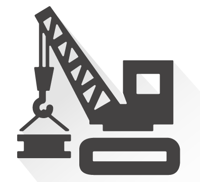

<p-toast></p-toast>
<app-top-nav></app-top-nav>
<div fxLayout="row" class="container" *mobxAutorun>
  <div class="side_nav_bar" *ngIf="this.getIsNavBarVisible() > 0">
    <app-side-nav></app-side-nav>
  </div>
  <div fxFlex="1 0 auto" class="mainarea-parent-div">
    <app-project *ngIf="mainAreaSandbox.fetchCurrentIndex() === 5"></app-project>
    <app-test *ngIf="mainAreaSandbox.fetchCurrentIndex() === 1"></app-test>
    <app-project-table *ngIf="mainAreaSandbox.fetchCurrentIndex() === 4"></app-project-table>
    <app-utility *ngIf="mainAreaSandbox.fetchCurrentIndex() === 6"></app-utility>
    <app-settings *ngIf="mainAreaSandbox.fetchCurrentIndex() === 3"></app-settings>
    <div *ngIf="mainAreaSandbox.fetchCurrentIndex() === 0" class="construction">
      
      <span class="construction-span">Page Under Construction</span>
    </div>
  </div>
  <p class="copy-rights"> &copy; Connectivity Standards Alliance</p>
  <div *ngIf="projectSandbox.getIsNewProjectClicked() === null" class="glass-pane"></div>
</div>
<p-confirmDialog class="confirmPopUp" [style]="{width: '50vw'}" [closable]="false" [baseZIndex]="10000">
</p-confirmDialog>
